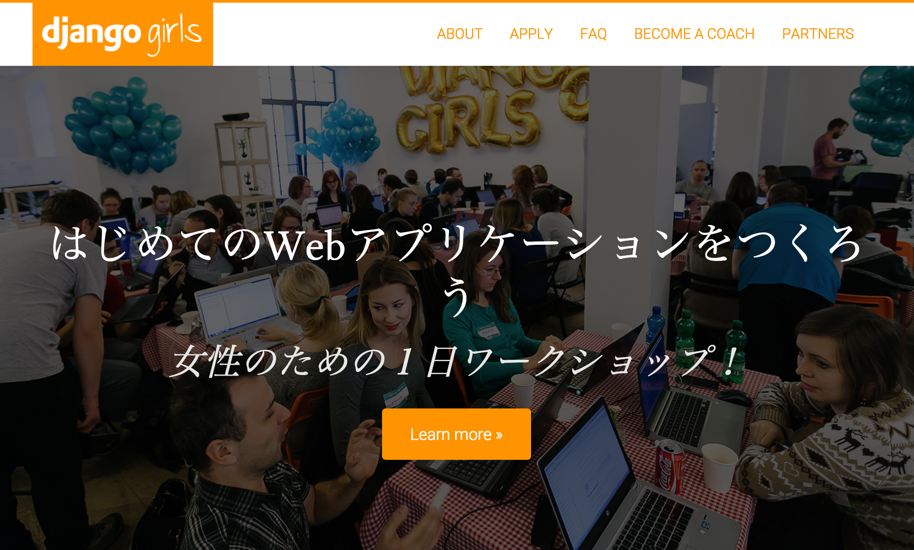

NASAをHack!
Bluemix+Pythonを駆使した
宇宙人探し奮闘記
Created by 嶋田健志 / @TakesxiSximada
お前誰よ(自己紹介)

- 嶋田健志 (@TakesxiSximada)
- Webエンジニア
- フリーランス
- Python好き
宣伝
本書きました 好評発売中(共著)
Pythonエンジニア養成読本 (技術評論社)
http://gihyo.jp/book/2015/978-4-7741-7320-7

DjangGirls
やりますやりました
Django のワークショップ (女性限定)
第2回も計画中
http://djangogirls.org/tokyo/

PyConJP 2015 チュートリアル
【初心者向けPythonチュートリアル】Webスクレイピングに挑戦してみよう(ja)
採用されました(2015-10-09(金)に行います)

PyConJP 2015 トークセッション
Python × Bluemix でやったHack-a-thonでの超短期間認識系アプリ開発事例(ja)
BIMのIaaS/PaaSであるBluemixを用いてアプリケーションをいかに素早く作成してdeploy方法などを当日のドタバタを含めて紹介
本題
| N | 銀河系に存在する高等文明の数 |
| Ns | 銀河系に毎年うまれる恒星の数 |
| fp | その恒星が惑星系をもつ確率 |
| ne | そのなかで生命が生存可能な環境をもつ惑星の数 |
| fl | そこに生命が発生する確率 |
| fi | その生命が知的生命体に進化する確率 |
| fc | その生命体が他の星に対し通信をおこなえる確率 |
| L | その高等文明の継続時間 |
つまりこういうのを
探したい
機械学習で(ボソッ
marseface project
アジェンダ
- 宇宙開発と機械学習
- 宇宙文明 VS 認識システム
- 成果と今後の展望
アジェンダ
宇宙開発と機械学習- 宇宙文明 VS 認識システムの旅
- 成果と今後の展望
アジェンダ
宇宙開発と機械学習宇宙文明 VS 認識システム- 成果と今後の展望
アジェンダ
宇宙開発と機械学習宇宙文明 VS 認識システム成果と今後の展望
今日のまとめ
- 宇宙生物は存在した
- アプリで宇宙生物を捕まえられるようになった
- まだまだ未確認の生命体がいることが予想される
みんなやろうよ!!
Bluemix